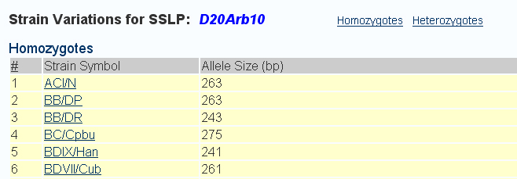
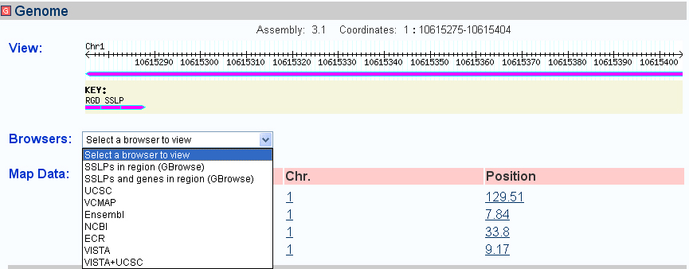
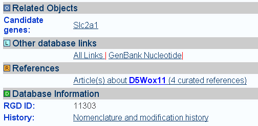
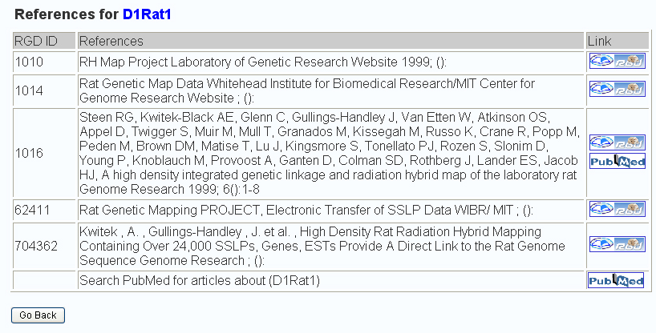
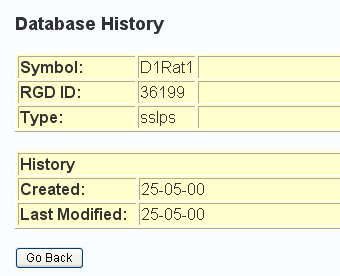

Name Section:
Symbol
The official SSLP symbol.
Alias Symbols
A previous symbols used for the SSLP.
Sequence Section:
Expected Size
The expected size of the PCR product produced by using the primer
pair listed with a genomic template containing this
microsatellite marker. The expected size was calculated during the
original characterization of this microsatellite marker in one
particular inbred rat strain and is highly strain dependent, i.e. in
a different rat strain the product size may be slightly different or
perhaps very different from the expected size reported here.
View Strain Variations
A
hyperlink to the Strain Variations report. The report is displayed
below. The homozygotes hyperlink at the top of the page hyperlinks
to the list of strains that are homozygous for the allele size
of the SSLP. The heterozygotes hyperlink
at the top of the page hyperlinks to the list of strains that
are heterozygous for the allele size of the SSLP.

Primer pairs
The primers used to amplify the SSLP region. The report label is
hyperlinked to the sequence report for the primer pair.
Template
The
genomic sequence that the primer pair will amplify. The
primer pairs are highlighted in the sequence with an underline and
blue text. The report label is hyperlinked to the sequence report
for the template sequence.
Genome Section:
Genome View
Displays an image of the SSLP with the genome locations displayed
above the image. The assembly used to determine the coordinates are
also displayed.
Browsers
A
drop down box provides hyperlinks to various genome viewing tools.
The hyperlink will enter the tool with the chromosome and coordinates
using values of +/- 2,000,000 or +/- 500,000 bases from the actual
SSLP's coordinates depending on which tool is selected. This
adding to the start and end positions of the SSLP was done to
allow the user to work with a larger viewing perspective of the
genome than what the SSLP's coordinates can offer. See the drop-down
box's choice of links below.

Mapping Data
Mapping information contained in RGD is shown for the gene itself
if it has been mapped directly onto one of the standard maps or has
been located on the cytogenic map by FISH or similar techniques. The
mapping information is linked to further information as shown
below:

Related Objects Section:
Candidate Genes
Genes known to be closely linked to this SSLP marker, or genes
that contain this SSLP within their open reading frames.
Other Database Links Section:
The labels hyperlink to a report that lists all available external databases and links to their reports. Some labels hyperlink to external databases directly, if their is a unique ID for that database.
References Section:
Links to a Reference summary report. The report contains a list of the reference's RGD ID, title, citation, and hyperlinks to the RGD reference report and the Pubmed reference report.

Database Information Section:
Database
Information
This section lists the RGD ID of the SSLP and also has a
hyperlink to the Nomenclature and Modification History report.
The SSLP's Nomenclature and Modification History report looks like the report below.
